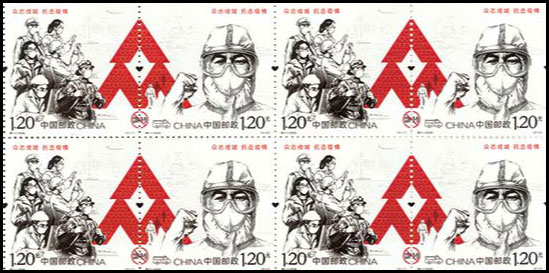
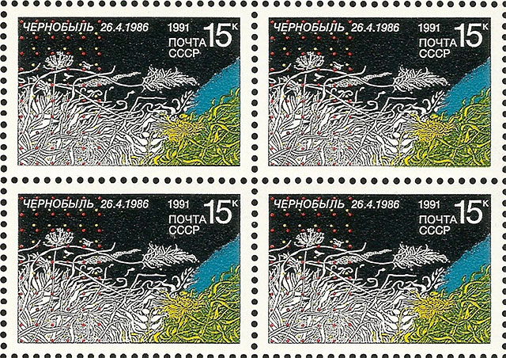
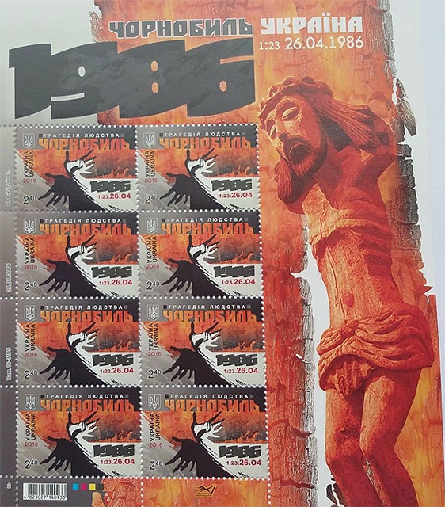

Wuhan and Chernobyl
Beware, the enemies of the people do not sleep!
(A Soviet time warning)Introduction
In 1986, being in Switzerland, a country about 2000 km far away from the USSR, I learned about the Chernobyl nuclear incident. I followed some recommendation of authorities to stay at home and later to avoid eating some products, like vegetables. The recommendation was valid for a short time, maybe a week or two.
Now (May 14, 2020) I am in New York City and, for over a month, due to coronavirus infection danger, I stay at home, like other millions of Americans, especially like seniors as myself.
This led me to comparisons between two communist regimes, which I also present through the images of some stamps issued by them and their followers.
Wuhan coronavirus outbreak
Like in any former or present-day communist countries the Chinese stamps are a mean of propaganda of the ruling communist party. Let us see what we learn from it after the issue of two commemorative stamps covering the event.

On Monday 11 May 2020 China Post issued a set of COVID-19-themed stamps "as a mark of reverence for Chinese people's solidarity in the battle against the coronavirus." It was issued to "recognize the contribution made by people from different walks of life and show China's spirit of solidarity in the fight against the COVID-19," Li Qian, deputy general manager of stamp collection and cultural media department of the Shanghai branch of China Post. Each set contains two stamps for a price of 2.4 yuan ($0.33). Related commemorative envelops were also issued on the same day. China Post plans to issue 14.5 million stamps.
It's worthwhile to mention that China Post has postponed its previous plan to issue the stamps on April 7 and refrained from disclosing any reason. Netizens predicted that the decision might be due to the design of the stamps. Source
The first stamp has pictures of people who worked on the frontlines during the lock down, including medical workers, scientists, police, community workers, volunteers and soldiers of the People's Liberation Army (PLA), recognizing their contributions. The backdrop has patterns of airplanes, cargo ships, trucks and high-speed railways which were deployed to provide emergency assistance to Hubei Province. The second stamp features a collage image of medical workers, equipped with personal protection gear. Source
Reaction in the USA
Now let other, innocent victim country speak. US intel believes China hid severity of coronavirus epidemic while stockpiling supplies . There are more than 1.1 million diagnosed cases in America. The novel coronavirus has now killed more than 243,000 people worldwide.
Over 3.4 million people across the globe have been diagnosed with COVID-19, the disease caused by the new respiratory virus, according to data compiled by the Center for Systems Science and Engineering at Johns Hopkins University. The actual numbers are believed to be much higher due to testing shortages, many unreported cases and suspicions that some governments are hiding the scope of their nations' outbreaks. Since the first cases were detected in China in December, the United States has become the hardest-hit country, with more than 1.1 million diagnosed cases and at least 66,369 deaths. As of May 2, 2020. Source
Chernobyl disaster and its cover-up
On April 26, 1986, the core of a reactor opened at the Chernobyl Nuclear Power Plant (Ukraine, in former USSR), sending plumes of radioactive material into the air. The toxic fumes contaminated the local vegetation and water supply near Pripyat, a Ukrainian city that was once part of the Soviet Union. But locals didn't know that at the time.
After three days of silence, the official Soviet statement following the accident was that the "radiation situation" near the plant had been "stabilized."
"Rumors are a little exaggerated. It is not a catastrophe. It is an accident," the deputy minister for civil aviation, Mikhail Timofeev, told reporters. Source

Despite the changes brought about by Mikhail Gorbachev's vaunted perestroika and glasnost , the catastrophe at Chernobyl remained a classic Soviet cover-up , one that survived the collapse of the USSR in 1991. The number of people radically affected by the explosion was kept secret and the result was far greater mortality and suffering. Only in recent years have researchers and scientists begun to uncover the full truth of Chernobyl. Source

I display above two stamps that commemorate the Chernobyl disaster, one issued in 1991 by the former USSR and another one, issued by Ukraine in 2016.
I am convinced that sometime in the future China will issue similar stamps, that commemorate the local and worldwide victims of what started in Wuhan and then spread worldwide from the sick People's Republic of China.
|
|
Created:
May 14, 2020.
Revised:
Dec. 20, 2023
.
|